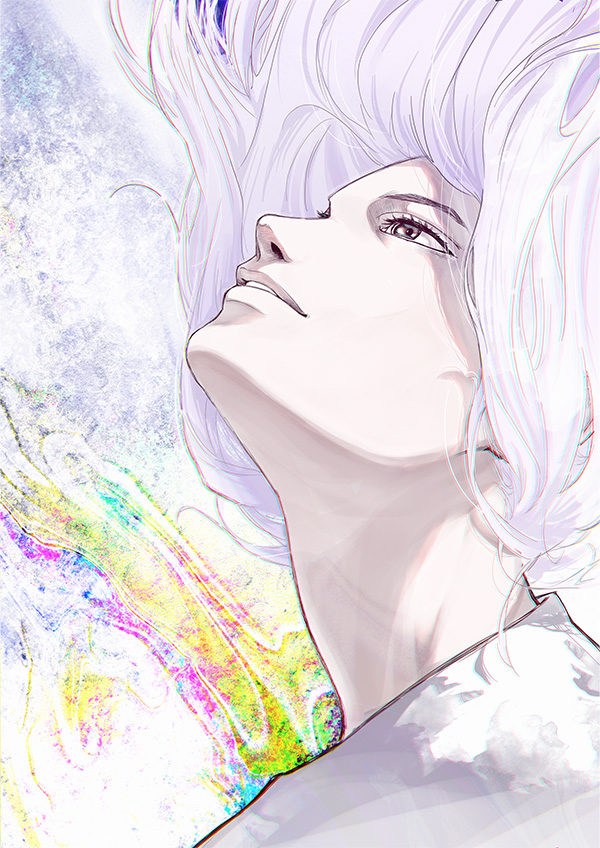

静大祭in浜松は、
毎年11月に静岡大学浜松キャンパスで
開催されている大学祭です。
今年で25回目となり、多くのサークルや
学生団体によるステージ発表、
室内展示やストリートパフォーマンスが
集まっております。
見るもよし、食べるもよし、遊ぶもよし。
ぜひご来場いただき、
心行くまでお楽しみください。
毎年11月に静岡大学浜松キャンパスで
開催されている大学祭です。
今年で25回目となり、多くのサークルや
学生団体によるステージ発表、
室内展示やストリートパフォーマンスが
集まっております。
見るもよし、食べるもよし、遊ぶもよし。
ぜひご来場いただき、
心行くまでお楽しみください。
テーマ
Delight
今年のテーマは「Delight」です。
大学生になり、高校に比べて全員で盛り上がる機会が少なくなってきました。
そんな中で、大学祭は学生全員が楽しむことのできる数少ないイベントです。
その年に1度のイベントで、友達や楽しさを分かち合い、
学内外にその楽しさを広めていきたい。
そして、私たち浜松静大祭実行委員会で楽しませたい。
そんな思いをこのテーマに込めました。
大学生になり、高校に比べて全員で盛り上がる機会が少なくなってきました。
そんな中で、大学祭は学生全員が楽しむことのできる数少ないイベントです。
その年に1度のイベントで、友達や楽しさを分かち合い、
学内外にその楽しさを広めていきたい。
そして、私たち浜松静大祭実行委員会で楽しませたい。
そんな思いをこのテーマに込めました。
委員長あいさつ
この度は、「第25回静大祭in浜松」に興味を持って下さり、
ありがとうございます。今年のテーマ「Delight」は、
数少ないイベントの一つである大学祭を、
学生だけでなく老若男女問わずたくさんの人が純粋に楽しめるようなものにし、 いつもの何気ない日々にLight(光)をもたらすことを願うものとなっています。
楽しい思い出になるように、
最高の大学祭を作り上げていきます。
皆さまのご来場を委員一同、心待ちにしております。
一緒に「第25回静大祭in浜松」を楽しみましょう！
第25期浜松静大祭実行委員会
委員長 杉本 翔 この度は、「第25回静大祭in浜松」に興味を持って下さり、
ありがとうございます。
今年のテーマ「Delight」は、
数少ないイベントの一つである大学祭を、
学生だけでなく老若男女問わずたくさんの人が純粋に楽しめるようなものにし、
いつもの何気ない日々にLight(光)をもたらすことを願うものとなっています。
楽しい思い出になるように、
最高の大学祭を作り上げていきます。
皆さまのご来場を委員一同、心待ちにしております。
一緒に「第25回静大祭in浜松」を楽しみましょう！
第25期浜松静大祭実行委員会
委員長 杉本 翔
ポスターデザイン発表
数々のご応募の中から第25回静大祭 in
浜松のポスターを決定いたしました。
この度はたくさんのご応募ありがとうございました！
この度はたくさんのご応募ありがとうございました！
採用作品
入選作品
ポスターデザイン発表
数々のご応募の中から第25回 静大祭 in
浜松のポスターを決定いたしました。
この度はたくさんのご応募ありがとうございました！
この度はたくさんのご応募ありがとうございました！
採用作品
入選作品